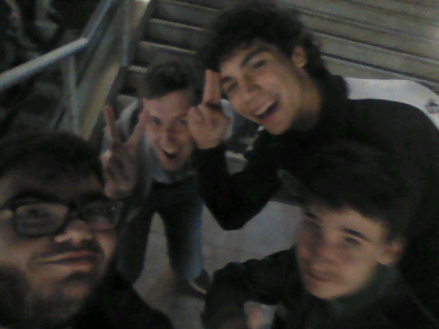

Howdy everyone! Fery here, once again, to present to you the new revamp of the website!... Which isn't much, but hey! At least it's better than before!
So, if you didn't notice immediately upon opening the site, we got a little bit of a... "facelift", with a new fontSpace Grotesk and dropdowns for the thigns to be organized! :3
So you may be asking, why did I do it? Well... Because yems :3 I do have a reason though! Aside from the whole "I wanted" reason, it's because I wanted to add a Style Changer later on, with JavaScript (scary!), but of course, I wanted it to be on the navbar! However, for it to be, I needed more space just in case, and one thing lead to the other and suddenly, I made a new branch that won't matter much (I'll use it for testing though!)
As for the font, well.... I got tired of Times New Roman, and just wanted something more rounded (Although this one screws with my :3s)
You also may have noticed, "Where's the Thoughts section?", or "Where's the changelog?" And uh. They're gone. I don't really have a reason to maintain them, and, honestly, I just really didn't want to deal with them. They were just not worth revamping. All blog posts will be their own changelogs and such!
Aside from that, let's see what more has happened these past few... days? Dang.
Of course, I've been working on my internship, and I think I've been doing a good job! Hopefully, at least. At least I can use my knowledge later on for this site too! If I remember :3'
Aside from that, there aren't that many news from my internship, aside from me taking the bus at 7:10 every morning (I thought I missed it today, I didn't)
Yup, I went to watch A Minecraft Movie with my friends on premiere day! Not the first session, there was NO way we were getting there that early. However, we did watch it regardless!
Honestly? It wasn't that bad! We really liked it, and we made memories together watching it! ^^ , Also the memes. oh my god the memes. They're so fucking good :sob:
I do have a photo of us after coming out from the movies, it is in 3ds quality though, so don't blame me for it being not very good x,p
From left to right, I'll give nicknames based on online nicknames : It's Me (Fery), DavidVegeta, Zhamty, and rightmost, down, Amaunyan0 (He doesn't seem to have social media :sob:), honestly I'm so glad we're friends, like, holy fuck they're just the best.
Like, this could easily be its own Memory post (so I'll keep it here), because I'm so glad we are friends x,d
So, I know this isn't quite a lot, but still, Monthly Update! ^^ I Finally get to talk about my friends too, even if for like, 2 paragraphs, but hey! Something is something
See you guys next time!
- Fery